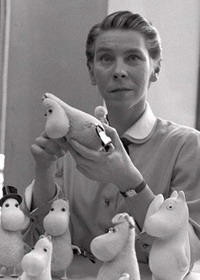

Му́мі-тро́лі — казкові істоти, герої дитячих творів фінської письменниці та художниці Туве Янссон.
У мумі-будинку мешкають:
Мумі-троль – загальний улюбленець.
Мумі-мама – втілення доброти, ніжності, турботи.
Мумі-тато – народився за найнезвичайнішого розташування зірок і залишений у Будинку підкидьок Гемулихи.
Сніфф – боягузливий, жадібний і егоїстичний, але дуже милий.
Маленька Мю – найменша мюмля у світі та інші….
На фото Туве Янссон з фігурками мумі-тролів

В Україні основні та найвідоміші твори про мумі-тролів фінської письменниці Туве Янссон виходять у Видавництві Старого Лева.
Їх об'єднали у зручну серію-трилогію «Країна Мумі-тролів».
Світ чарівних створінь Туве Янссон налічує понад 10 адаптацій.
Найвідоміші з них: японське аніме 1990-х років, польський ляльковий серіал та сучасний 3D-серіал виробництва Великої Британії та Фінляндії.
Найкращі та найвідоміші ігри про Мумі-тролів:
Snufkin: Melody of Moominvalley (Снусмумрик: Мелодія Долини Мумі-тролів)
Moomin: Winter Magic (Мумі-тролі: Чарівна зима)
Moomin and the Lost Ruby (Мумі-тролі: В пошуках рубіна)
The Great Moomin Party (Мумі-Тролі: Велика вечірка)
Moomin Toves (Мумі-тролі: Загадковий гість)